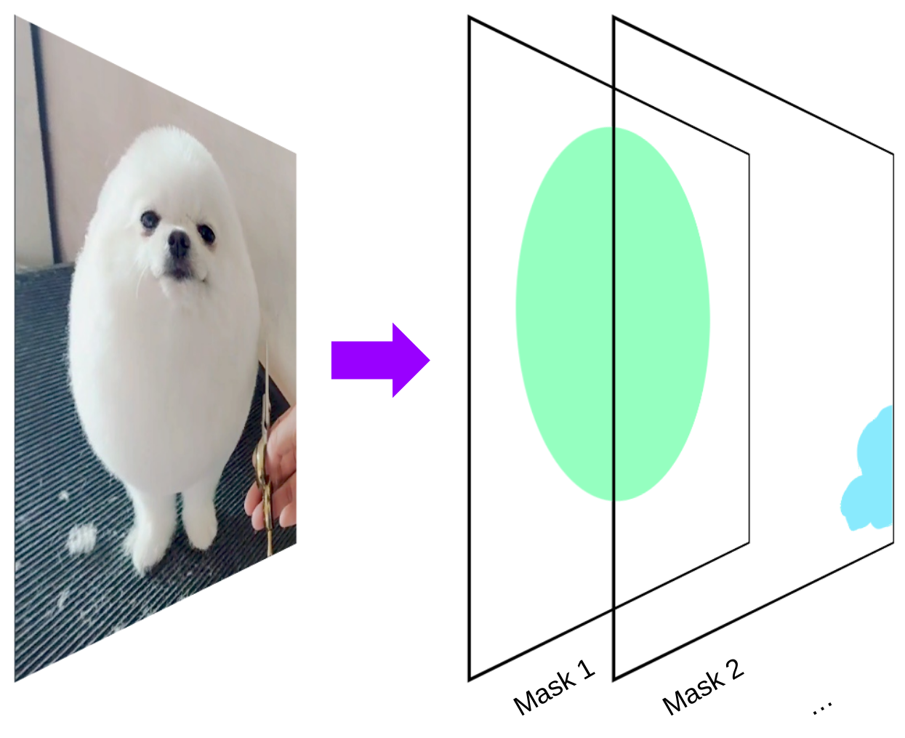
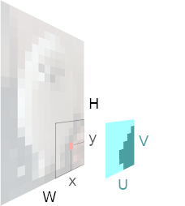
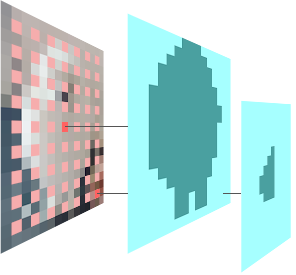
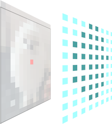
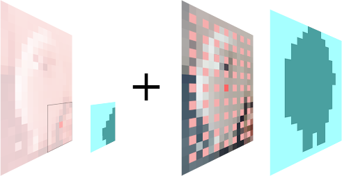
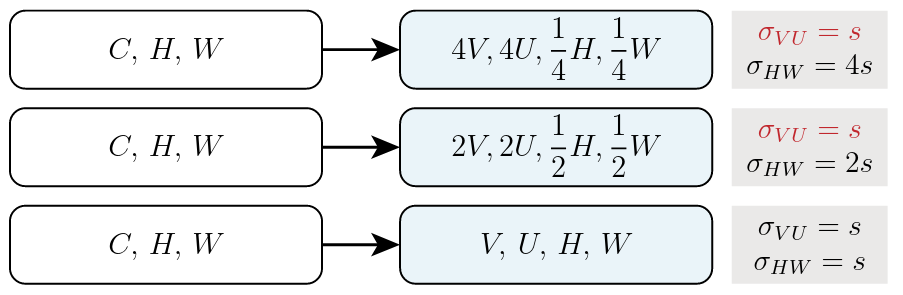
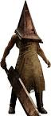
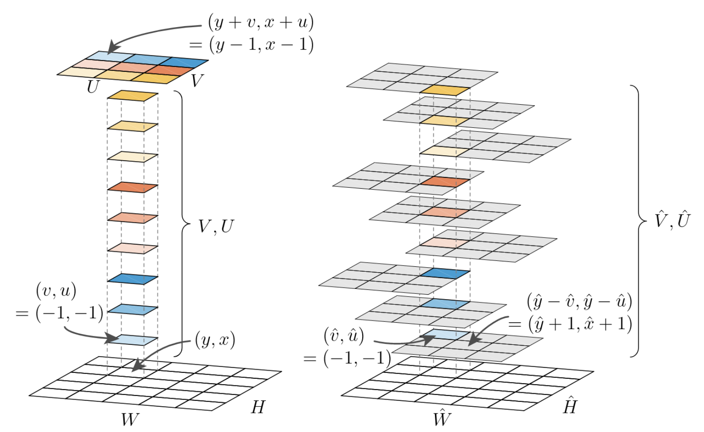

TensorMask is the name for an image segmentation method, released in 2019 by the authors (affiliated to FAIR).
This post is my attempt at understanding this paper.
At the heart of the TensorMask paper is a question:
could there be a better way to generate dense pixel masks than the current state of the art?
For context, the most famous instance segmentation methods are probably RCNN and YOLO. A difficult thing about instance segmentation is that unlike with pixel classification the amount and sizes of masks a model should output are variable.
In instance segmentation, the goal is to generate a single mask for each object in the image, even if several nearby objects have the same class. This means the number of masks is variable, and can differ between images - even if the images themselves have the same shapes.
I think other articles do a good job of outlining how RCNN and YOLO get their bounding boxes, so I won’t go too much into it here.
But the point is, wouldn’t it be nice if we could just generate dense masks in some fixed-shape tensor, using fixed-shape neural networks?
The core idea of TensorMask is relatively simple:
At each pixel of the image, output a UxV mask which determines whether nearby pixels are in or out of the mask.
A simple idea, yes. Although, the execution is anything but: you can just tell that the authors put in a lot of effort towards making it work in practice.
I think it helps to start with the simple, core concept, and then gradually add complexity.
The core concept is, given an image of size (H, W), train a model to output a sliding-window mask tensor (U, V, H, W). In other words for each pixel in the image, our tensor contains a mask of size (U, V). You can think of this tensor as a big numpy array, like this.
x, y = some_pixel_coordinate
mask_at_some_pixel = tensor_mask[:, :, x, y]
assert mask_at_some_pixel.shape == (U, V)
You can think of a mask as a little window centered around some pixel. This window is a UxV grid of 0-1 values. Each value is a single probability, for example one if the pixel is part of a region, 0 otherwise.
If there’s some values above a threshold (e.g. 0.5) in this window, then there is a segmentation mask for that pixel. If none of the values are above the threshold, then there is simply no segmentation mask there.
Authors take known masks from labelled datasets, and turn them into ground truth tensors. For example, if the ground truth label has a single mask with a bounding box centered at the pixel (5, 6), the 2d subtensor (U, V) which is a subset of the full tensor (U, V, H, W) at h=5, w=6, is initialized to match that mask.
In numpy you would write something like:
U, V = (15, 15) # constants for the mask size
H, W = image.shape
tensormask_ground_truth = np.zeros((U, V, H, W))
for label_mask, mask_pixel_position in masks:
# label mask, obtained from the dataset, contains 0s and 1s
assert label_mask.shape == (U, V)
x, y = mask_pixel_position # the pixel at which the mask box is centered
tensormask_ground_truth[:U, :V, x, y] = label_mask[:U, :V]
Up to now, we just focus on inputs and outputs. But how do we actually produce this large (U, V, H, W) tensor from an input image e.g. (3, H, W)?
You’d probably expect the answer to be ‘with some kind of neural network’...
and you’d be right.
simplified architecture of a single TensorMask head
First, the author pass the image through a well known vision backbone called a Feature Pyramid Network (FPN), which takes as input a (3, H, W) image and produces a (C, H, W) feature tensor.
Well, actually, it produces various feature tensors at different resolution levels (C, H/2, W/2), …, but we’ll discuss those a little further down. For now, we focus on the highest resolution output, which is (C, H, W).
This feature tensor is passed through a single cnn layer outputing a (UxV, H, W) tensor which is reshaped to (U, V, H, W)
Note: I was surprised by this because it means that the mask information a few pixels away from a certain pixel is very tied to the features at that pixel. Remember this fact, as it will be relevant when we talk about improvements that the authors tried.
So that’s the theory, but what about practice? Could this simple concept actually work?
Well, reading the paper, it becomes clear that the authors had to overcome a few hurdles before this idea could actually produce useful results.
In the example picture above, one of the output masks takes up almost the entire picture. With this tensor idea, that would mean that we'd need to make U and V at least as large as H and W, which would make the tensors arbitrarily large - for a 600x600 pixel image, the full tensor would be 129’600’000’000 values, (129Gb if values are only zeros and ones).
The first, most obvious way to reduce this size is to make masks smaller (smaller U, V). But this also means that large objects can't be segmented anymore. So the authors try a few other typical tricks to make things smaller.
For example, instead of outputting a UxV dense mask at every pixel, we could output a mask only every 2 pixels, which would make the tensor 4 times smaller (U, V, H/2, W/2).
This is called the HW stride, and it can be any positive integer N, depending on how sparse we want the output to be.
This is good, but doesn't take us all the way there, and if we push this too far, we lose the ability to get masks for small objects at all.
Another way we can save space is by making the masks themselves sparse. For example, we can make each mask less dense by ‘spreading it out’ over more pixels. That’s another way to make the tensor smaller (U/2, V/2, H, W)
Again, although this figure shows a stride of 2, a larger number can be chosen as well.
What about the gaps in the mask? They can then be filled by upsampling.
The ability to play with this striding is great, as it makes it feasible to output reasonably-sized tensors.
But everything has a cost: Almost all results point toward the notion that the more upsampling is used here, the more the model becomes ‘sensitive’ as it requires ‘tricks’ to stay effective (such as aligned representations - mentioned below, and bilinear upsampling)
Also, unfortunately, these sparse mask alone don’t solve everything, as there is no single mask striding and size that can produce good masks for any kind of object in the image. Small objects need a lot of small masks, whereas large objects need a few, large masks.
Instead, the authors use a multi-resolution approach: They make multiple copies of this tensor mask method, with various striding and size values. Each copy is called a ‘head’. Each head outputs a mask tensor, which can simply be combined: Most pixels will probably not have a 'valid' (positive) mask centered there anyway, and we only care about 'valid' masks.
Note: the same pixel could end up with multiple positive masks, I guess? I'm not sure what happens in that case.
I found this not so intuitive, because it adds a bunch of parameters to the method - how many heads do you use? What HW striding do you use for each one? What UV striding and UV size? In the end, this part of the method is very likely about optimization - It would have been nice if we could simply hone in on a single tensor shape which works for all kinds of objects, but that would likely have been much too inefficient.
Note: Would it have worked though? I would certainly be interested in finding out if the method still works the same with large, catch-all high-resolution masks - despite being much slower and taking much more memory.
The authors do try several sets of head parameters and compare them. Long story short, they find that they get their best results when they make multiple heads, with increasing H, W size and proportionally decreasing U, V size.
I stole this illustration from the paper. Each line is a head. σ are the strides for either UV or HW (a.k.a how many pixel apart mask pixels, and mask centers are).
An intuition for why this bipyramid scaling works is that for small objects, you want many small masks (large H, W, small U, V), but for large objects, you want fewer, bigger masks (small H, W, large U, V).
A neat thing is that it keeps the tensor size constant for all heads - a less neat thing is that since each head uses a different level of the FPN backend, which all have different HW resolutions, the inputs need to be upscaled before the bipyramid heads. Oh well.
 No, not this kind of pyramid head.Higher in this post, I mention how inefficient it seems to be that the features for a given pixel contribute to mask information a bunch of pixels away. But the authors are like ‘have no fear, sweet summer child, for we have designed man-made wonders beyond your comprehension’, and present us with what they call the ‘Aligned Representations’. Basically, they shift things around in the (U, V, H, W) tensor, so that the tensor value at some pixel (x, y) is now the mask information of this pixel but for a mask window centered at another pixel which is u, v pixels away.
In other words, in the natural representation, moving in the UV dimensions represent moving sideways within a mask.
In the aligned representation, moving in the UV dimension represents shifting the mask sideways (but keeping target the pixel fixed).
Their figure can take a little bit of time to understand, but explains it better than I ever could:
Anyways, you can still quite well understand the method without fully understanding this - what really matters here is that this is a shifting around of values in the tensor, so it can be done easily and reversed, and does not change the tensor size. When the tensor is in ‘Aligned mode’ the neural network layers do a better job of computing useful local information. And when the tensor is put back into ‘Unaligned or natural mode’, it is simpler to understand for us, and easier to manipulate at the mask level.
The authors show that this aligned representation makes a big difference when creating sparse masks that are then upscaled - and much less difference when using no up-scaling. (I find this surprising, as I would have expected the difference to be large without up-scaling still. Maybe it’s because they only use relatively small UV sizes in testing, which means things are never so far away? If that’s the case, I would bet that repeating the same test with non-upscaled, large-UV masks would lead to a greater impact of representation alignment.)
How does this method avoid generating very similar nearby masks for the same object?
My understanding is that the model learns not to predict those because the dataset makes sure to exclude them. I should look at the code again to better understand whether the authors find other ways to avoid this.
After all these optimizations and improvements, the authors show that the tensormask model is competitive with Mask RCNN, which does seem to answer their initial question: Yes, this is a viable method for generating masks (if not a simple one - after all the upscaling, striding, aligning, multiple heads, and other tricks), using only fixed-size tensors and neural networks.
Will it go down as one of the classic image segmentation methods, in a few years? I guess we’ll all find out.
With this basic understanding in mind, you might want to look a the the full paper which is available in open access, or the code which the authors have open-sourced on github.